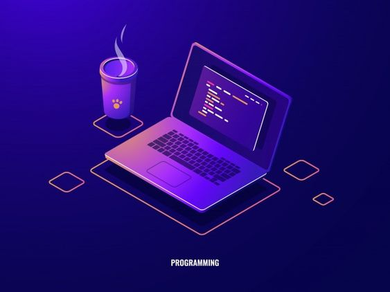

Estudios Realizados
Administracion
2012 - 2016
Universidad de Antioquia
Desarrollador Full Stack
2017 - 2019
UPB
Ingles B2
2020 - 2022
CES
Ingeniero De Sistemas
2022 - 2024
Universidad Americana
Soy un apasionado ingeniero de sistemas mas de 5 años de experiencia en el campo de la programación y el desarrollo de software. Mi enfoque principal ha sido crear soluciones innovadoras y eficientes para resolver problemas complejos. Mi carrera comenzó con un sólido fundamento en la teoría de sistemas y la programación, y desde entonces he trabajado en proyectos diversos que abarcan desde aplicaciones web hasta aplicaciones móviles y sistemas de gestión de datos.
Medellin-San Javier
Ingeniero De Sistemas
Desarrollador Full Stack
2012 - 2016
Universidad de Antioquia
2017 - 2019
UPB
2020 - 2022
CES
2022 - 2024
Universidad Americana
El administrador es un profesional responsable de supervisar y gestionar eficazmente las operaciones y recursos de una organización, departamento o equipo. Su papel es crucial para garantizar que las actividades se lleven a cabo de manera eficiente y que los objetivos se alcancen de manera efectiva.
El desarrollador full stack mobile es un profesional de la tecnología con experiencia en la creación de aplicaciones móviles completas, desde el desarrollo del lado del cliente hasta el lado del servidor. Su objetivo principal es diseñar, desarrollar y mantener aplicaciones móviles que sean eficientes, atractivas y funcionales.
El desarrollador Java es un profesional de la programación que se especializa en el desarrollo de aplicaciones utilizando el lenguaje de programación Java y su ecosistema. Java es ampliamente utilizado en una variedad de aplicaciones, desde aplicaciones de escritorio hasta aplicaciones web y sistemas empresariales.
profesional altamente especializado en el diseño, desarrollo y mantenimiento de aplicaciones móviles para dispositivos como smartphones y tabletas. Estos ingenieros trabajan en estrecha colaboración con diseñadores y equipos de desarrollo para crear experiencias de usuario atractivas y funcionales en plataformas móviles.